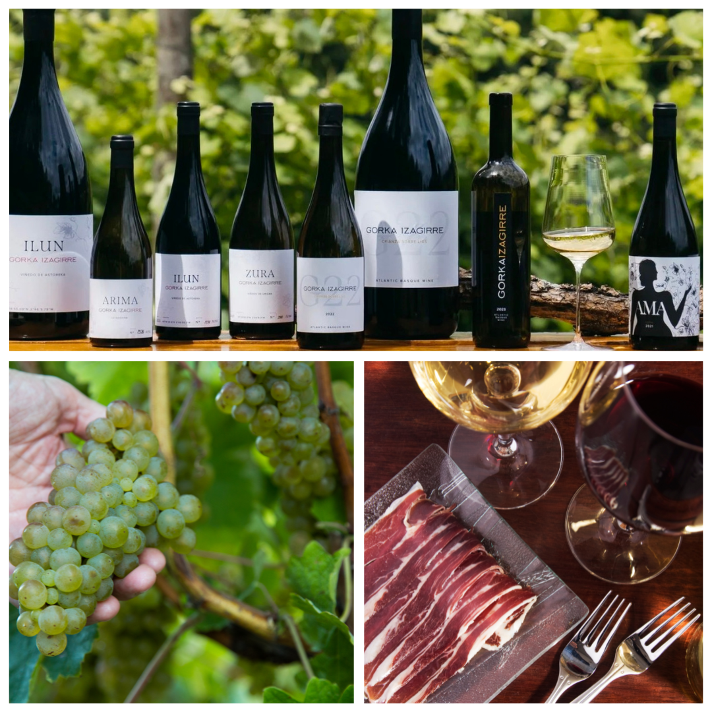

Save the date:
2027 Basque Country Trip
Nine days, eight nights, two BWI producers, and a route that runs Bilbao → Rioja → Pamplona → San Sebastián → the French Basque Country. The pre-interest list is open.


Our 2026 Basque Country trip filled up the week we announced it. So we're back at it for Fall 2027, again in partnership with Get Away à la Carte — Kathy Denis's small-group travel company out of Overland Park — and again with me along as the cultural anthropologist, wine importer, and on-the-ground guide.
The format is the one I always wish more wine trips did: a real itinerary, but with the kind of access only comes from spending fifteen years building relationships in a region. Exclusive tastings at both Gorka Izagirre and Zudugarai — the two producers we represent. A farewell dinner inside a sociedad gastronómica, the famously hard-to-enter private Basque cooking-and-dining clubs. Pintxos tours in San Sebastián led by someone who has lived there. And a full day across the border in the French Basque Country, because the cultural story doesn't stop at a national line drawn in the seventeenth century.
"Rare access, authentic stories, and the kind of insider perspective that makes every stop richer."
The route
Eight nights of accommodations, coach transportation throughout, gratuities, meals as listed (wine included at lunch and dinner), and excursions all bundled. Airfare is on you, but Kathy will help if you need.
Day by day
Day 1 · Bilbao. Arrival, an early-evening aperitivo, and a welcome dinner to set the tone.
Day 2 · Bilbao. A guided walking tour of the old neighborhoods, the Guggenheim with a docent, lunch at the museum, free afternoon to wander — the maritime museum, the cathedral, or the San Mamés stadium if you're a fan. Dinner on your own (I have a list).
Day 3 · Gorka Izagirre. The hillside winery above Bilbao, fifteen minutes out of the city, the one I've written about elsewhere on this journal. Guided tour, full tasting, Basque bites paired course-by-course. The neighboring restaurants are Michelin-starred and were featured in Eva Longoria's Searching for Spain; we eat exactly where we should.
Day 4 · Rioja and the salt valley. South through the Cantabrian foothills into Rioja Alavesa. We stop at Salinas de Añana — a millennia-old salt-evaporation valley terraced into a hillside, with a tasting of the salts at the end — then settle into Laguardia, a hilltop medieval town surrounded by vineyards. Group dinner.
Day 5 · Navarra. A family-owned Garnacha producer in the Navarra appellation, with a tour, tasting, and lunch at the winery. Evening back in Laguardia for a quiet wander and a relaxed dinner on your own.
Day 6 · Pamplona to San Sebastián. Pamplona for the morning — the running-of-the-bulls streets, Hemingway's Café Iruña, an hour to choose where you want lunch — then across to San Sebastián for three nights in a seaside hotel. Evening: a guided pintxos tour through the old town.
Day 7 · French Basque Country. Over the Pyrenees, into France. Saint-Jean-de-Luz for the morning, Espelette for lunch under the red peppers drying on the walls, Bayonne for chocolate tastings in the medieval quarter. Back to San Sebastián for the evening.
Day 8 · Zudugarai and Getaria. Morning in Getaria — the coastal village that gives the txakoli DO its name — and an exclusive private tasting at Zudugarai, which is normally closed to the public. We finish the day at a farewell dinner inside the owner's sociedad gastronómica, a members-only Basque cooking club. I cannot overstate what a rare thing this is.
Day 9 · Departure. Breakfast, goodbyes, fly home — or stay and keep going.
Fitness note
The Basque Country is glorious and it is also, in many of its prettiest places, made entirely of cobblestones and stairs. A moderate level of fitness — comfortable walking and standing for stretches — is genuinely necessary. If you can do an art-museum day on your feet without fading, you'll be fine.
How to join
There are two ways to get involved. If you're ready to book, head over to Get Away à la Carte — Kathy handles the bookings, pricing, and full itinerary there.
If you're interested but not quite ready to commit, join the pre-interest list below. You'll be the first to hear when registration opens, and you'll get a couple of dispatches from me as the trip takes shape — producer visits, sample itinerary tweaks, the occasional photo from Bilbao.
Pre-interest list
Join the 2027 trip waitlist
Not a deposit, not a commitment — just a heads-up when registration opens and a couple of updates between now and then.
I'd love to see you there.